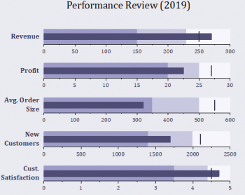
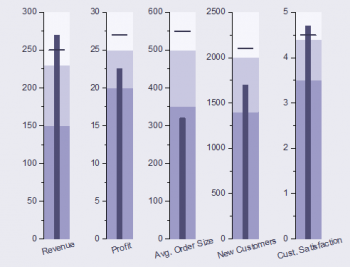

ブレットチャート
Bullet-Chart
| ブレットチャート
|
垂直ブレットチャート
|
| 
|

|
| 正規化ブレットチャート
|
|

|
|
必要なデータ
少なくとも4つのY列を選択します:1つめのY列は実際の値、2つめのY列は目標値を、残りのY列はパフォーマンスの定性的な範囲を表します。
グラフ作成
データを選択します。
メニューからを選択します。
データを選択して上記のメニューをクリックすると、"Plotting: plotbullet」 ダイアログが開きます。ここでレイヤ間、レイヤ周りの間隔を設定できます。
テンプレート
Bullet.otpu ; BulletVerti.otpu ; BulletNormal.otpu (iOriginのプログラムフォルダにインストールされています。)
Notes
- 入力に XYY(YY...) を使用できます。最初のY列は現在の値であり、細い棒としてプロットされます。2番目のY列は散布図としてプロットされ、そのシンボルの形状は垂直の棒です。3番目以降のY列はオプションで、推移積み上げ棒としてプロットされます。
- プロットタイプ順：推移積み上げ棒 --> 細い棒 --> 散布図
- 各行がレイヤとしてプロットされ、各レイヤは1つの列として積み上げられます。
- 垂直ブレットチャートは、棒を列としてプロットし、シンボルの形状は水平の棒です。各レイヤは1つの行として積み上げられます。